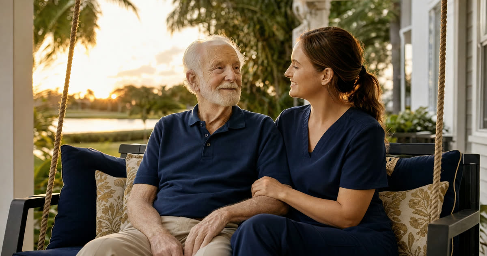

Walter's Family, and the Two Petitions
Walter is 81 and lives in Vero Beach. (Walter is a composite drawn from the kinds of cases families bring to us, not an actual client, but the pattern is one I see often.) He married his second wife nine years ago, a few years after his first wife died. His three adult children from that first marriage never fully warmed to her, and after Walter had a stroke that left him unable to manage his own affairs, the family split into two camps almost overnight.
His wife filed a petition asking to be appointed his guardian. Within a week, his eldest daughter filed a competing petition on behalf of herself and her siblings. Each side believed the other was motivated by money. Neither side was entirely wrong to worry, and neither was entirely right about the other's intentions. This is the shape most blended-family guardianship fights take: two people who each have a legitimate emotional claim, and a judge who has to look past the emotion to the law.
A quick refresher: guardianship is a court process under Florida Statutes Chapter 744, used when a judge finds a person incapacitated and no less restrictive option will protect them. It is a last resort, not a first step.
Have this exact situation? Talk it through with a Florida attorney — the 20-minute consultation is free.
Book Free Consult or call (888) 388-8445What the Statute Actually Says About Preference
Families are often surprised to learn that Florida law does not hand the job to the spouse automatically, and it does not hand it to the children automatically either. There is no statutory rule that ranks 'wife' above 'adult child' or vice versa. The court is directed to hear evidence on who is entitled to preference, but that preference is not fixed by relationship alone.
What the judge actually weighs includes:
- The ward's own expressed wishes, if he is able to communicate them or expressed them before he lost capacity
- Any prior written designation, especially a pre-need guardian declaration filed with the court
- Each candidate's ability to serve, including health, location, and understanding of the responsibilities
- Any conflict of interest, such as a candidate who stands to inherit disproportionately or who has a history of financial disputes with the ward
- Whether the candidates can work together, or whether their conflict itself threatens the ward's well-being
In Walter's case, both his wife and his daughter were technically eligible. Both loved him. Both also had motives the other side found suspicious, and the judge had to sort through that.
The Examining Committee and the Hearing
Before any guardian is appointed, the court must first determine that Walter is incapacitated. That means a petition to determine incapacity, appointment of a three-member examining committee to evaluate him, and a hearing at which Walter has the right to his own attorney. The court cannot skip this step just because the family agrees he needs help. It also must consider whether a less restrictive alternative, such as a durable power of attorney, a health care surrogate designation, a trust, or a pre-need guardian declaration, would address his needs without a full guardianship.
In Walter's case, the committee confirmed the stroke had left him unable to manage his finances or make complex medical decisions, though he could still communicate simple preferences clearly. He told the judge, in a supervised interview, that he wanted his wife 'to look after him' but that he trusted his daughter 'with the money.' That single comment shaped much of what came next.
The Compromise the Court Reached
Rather than choosing one side outright, the judge in Walter's case split the guardianship, appointing his wife as guardian of the person, responsible for his daily care, living arrangements, and medical decisions, and appointing an independent professional guardian, registered with the Office of Public and Professional Guardians, as guardian of the property, responsible for his finances and assets.
This kind of split is explicitly allowed under Florida law. A guardianship can be plenary (covering everything) or limited (covering only certain rights), and it can separate the person from the property so that two different people, or a person and a neutral professional, share the job. It is a common compromise in blended-family cases precisely because it lets a devoted spouse continue caring for daily life while removing money, and the suspicion that surrounds money, from the equation.
What a Pre-Need Designation Would Have Avoided
Here is the part of Walter's story that stays with me. Years earlier, an attorney had suggested he sign a pre-need guardian designation, a simple written declaration naming who should serve as his guardian if he were ever found incapacitated. Walter never got around to it.
Had he signed one, naming his wife, his daughter, or even both in a defined split, that document would have created a rebuttable presumption in court that his chosen person was entitled to serve. The judge would still confirm the nominee was qualified, but the burden would have shifted to whoever wanted to challenge Walter's own choice, rather than leaving two families to litigate the question from scratch. Instead, Walter's case took months longer, and the legal fees for both petitions came out of assets that would otherwise have gone to his care or his heirs. A pre-need designation costs very little to prepare. Contested guardianship litigation, by contrast, can consume tens of thousands of dollars in attorney's fees, evaluation costs, and guardian fees, all paid from the ward's own estate.
Frequently Asked Questions
The Truestead Takeaway
Walter's case ended, as many blended-family guardianships do, in a negotiated split: his wife caring for his daily life, an independent professional guardian managing his money, and both sides watching the annual accountings instead of watching each other. It worked, but it took months and real money to get there. What I tell Florida clients, especially those in second marriages with children from a first marriage, is that the pre-need guardian designation is one of the cheapest, quietest pieces of insurance you can buy for your own family's peace. It does not eliminate every disagreement, but it tells the court, and everyone you love, what you actually wanted before anyone had to guess. If your family includes a blended household and no such document exists yet, that is worth a conversation with a Florida elder law attorney before a crisis forces the question.
Have a child turning 18? Get the free 18 & Protected packet — the legal documents every Florida 18-year-old needs.
Get the Free PacketTalk to a Florida Attorney
Every family’s situation is different. Schedule a consultation with Arthur Simpson, Esq. to review your plan and your options under Florida law.
Schedule a Consultation →This article is for general informational purposes only and does not constitute legal advice, nor does reading it create an attorney-client relationship. Florida estate, elder, probate, and real estate law are fact-specific and change over time. Consult a licensed Florida attorney about your individual circumstances. Arthur Simpson, Esq. is licensed to practice law in the State of Florida. Attorney advertising.
Talk to a Florida Attorney — Free 20-Minute Consultation
Pick a time below. No obligation, no pressure — just answers.